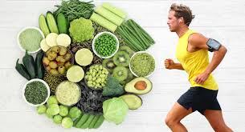
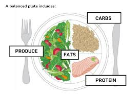

NUTRITION IS A JOURNEY.
YOU GROW STRONGER WITH EVERY MEAL.

Eat More Greens
Include a variety of leafy greens like spinach, kale, and broccoli in your daily meals for essential nutrients.
Stay Hydrated
Drink at least 8 glasses of water daily to stay hydrated and support overall body functions.

Balance Your Plate
Divide your plate into quarters for proteins, carbs, vegetables, and fruits for a balanced diet.

Limit Processed Foods
Reduce intake of processed foods to avoid added sugars, unhealthy fats, and preservatives.

Eat Healthy Fats
Incorporate sources of healthy fats like avocados, nuts, and olive oil for heart health.

Practice Portion Control
Watch your portion sizes to avoid overeating and maintain a healthy weight.